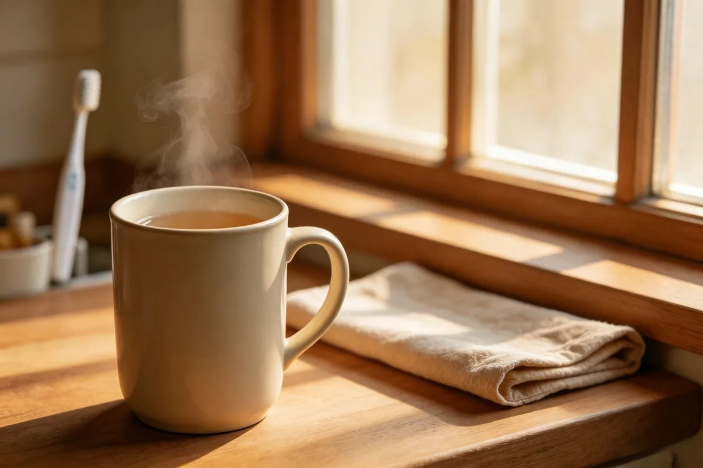

The First Cup of Warm Water
Before the office lights were fully on, the night guard filled his enamel mug from the communal kettle. I stood beside him with my own cup while the first buses moved past the gate.

The kettle before breakfast
The guard checked the water gauge, lifted the heavy kettle, and poured without sitting down. His mug had a blue rim and a chipped place near the handle. Mine was plain glass and too hot to hold at first, so I left it on the counter beside his keys.
Nothing was added. The action belonged to the quiet interval before breakfast smells reached the hallway. By the time the day staff arrived, both cups had been moved from the counter and the kettle was heating again.
The same water, different parts of the day
Goji berries might enter a jar later at the desk. Salt water appeared at the washbasin, while the evening meal ended with a slow walk outside. Morning warm water did not replace any of these. It occupied the first empty space of the day.
I noticed the guard rinse his mug as soon as he finished. He turned it upside down on a square cloth, wiped the kettle handle, and went back to the gate before the courtyard became noisy.
A cup identified by its place
The mug was never mistaken for a soup bowl or tea jar because it always stood beside the keys. Its meaning came from location and hour rather than from an ingredient list.
When the shift changed, the dry mug returned to the same hook. The next morning began with the sound of enamel touching the counter.